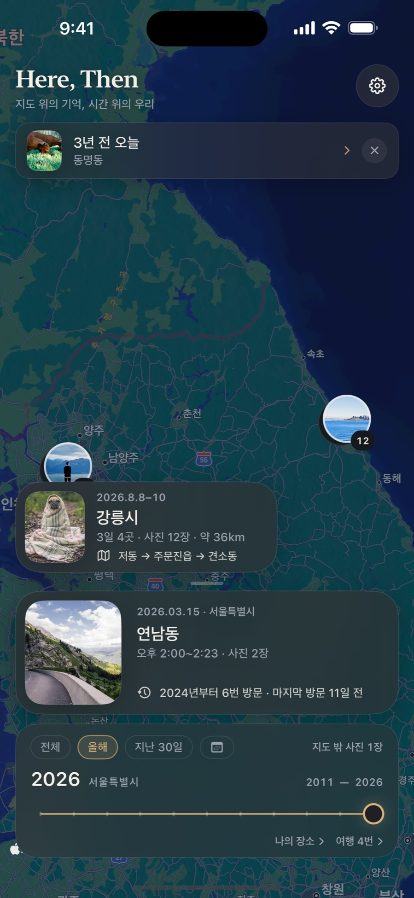
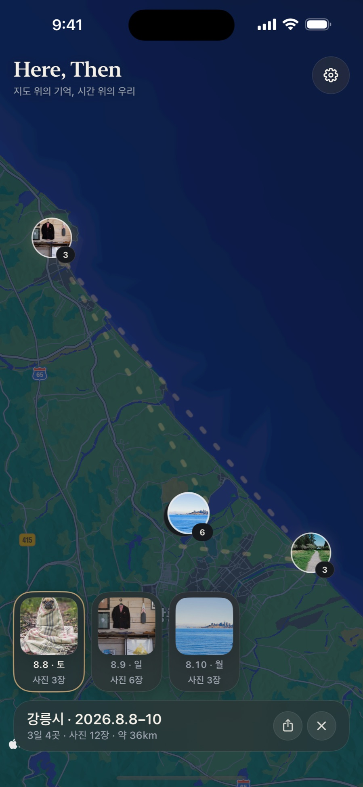
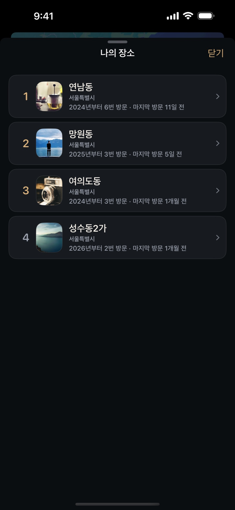
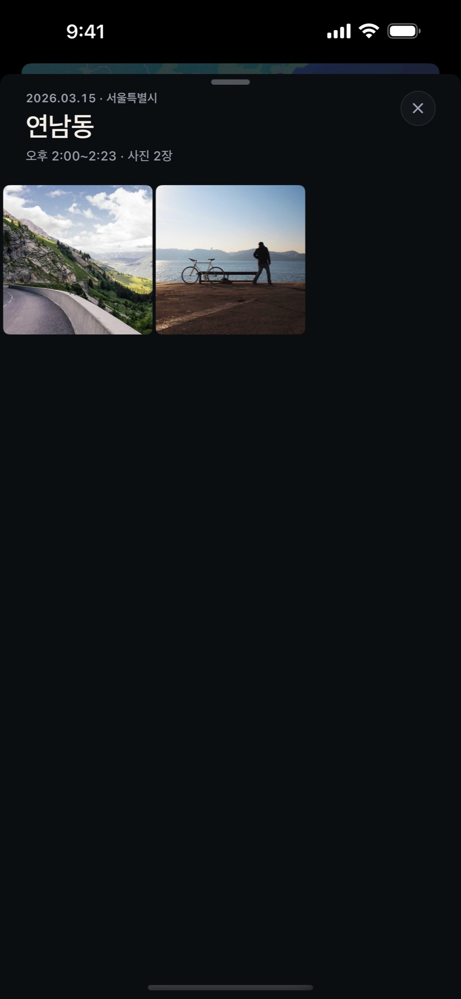

기억 지도
사진 속 위치를 모아 내가 살아온 장소를 지도 위에 펼칩니다.
Here, Then
사진은 앨범이 아니라,
살아온 장소의 기록입니다.
보관함을 기기 안에서만 분석해 당신이 어디에서 어떤 시간을 살아왔는지 지도 한 장에 펼칩니다.
App Store에서 곧 만나요Your life, on one map
어디에 머물렀고, 언제 다시 찾았는지. 장소와 시간 사이에 숨어 있던 나만의 이야기를 발견하세요.




Four ways to remember
사진 속 위치를 모아 내가 살아온 장소를 지도 위에 펼칩니다.
연도와 기간을 움직이며 시간에 따라 달라진 나의 반경을 돌아봅니다.
가까운 날짜와 장소의 사진을 이어 하나의 여행으로 정리합니다.
오늘과 같은 날, 이 장소에 남겨 둔 오래전 기억을 다시 건넵니다.
Private by design
모든 분석은 당신의 기기 안에서만 이루어집니다. 가장 개인적인 기록은, 처음부터 끝까지 당신의 것으로 남습니다.